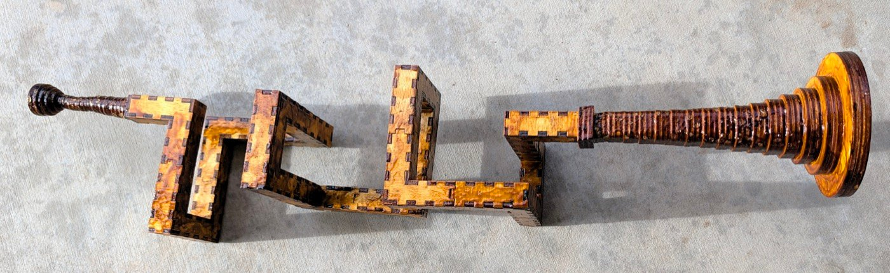

Trumpet, elbows allowed
A trumpet cut flat from 3mm birch ply and press-fit into a tube. The airway is a 10mm square running through 16mm blocks — 10mm of air inside 3mm walls — and it never changes section from the mouthpiece to the throat of the bell.
The instrument that has been built is a coil of 1096mm in 12 sections, with a 72mm mouthpiece at one end and a 153mm bell at the other. It winds 1080° — three turns, right-handed, about a north–south axis. Everything else here is a candidate for the next one.
Every bore here is a walk through a grid of cubes, the kind of trumpet you could build in Minecraft. The same trumpet swept along a smooth curve instead, with no grid and no elbows, is its own repository: swept-curve, which holds the built spiral bore and every swept-curve design. Both take the bell and the mouthpiece kept here.
The mouthpiece on this instrument is 24 rings where the design cuts 30 — 72mm rather than 90 — so it is the instrument that is short, not the drawing. The coil winds three whole turns: its walk is W U E D three times over, and its first and last blocks sit on the same cross-section point, which a fractional number of turns cannot do.

The idea
A brass instrument is a long tube you have to fit into a small space. A trumpet could be done with three tight bends and a lot of drawn brass. This does it by treating the tube as a walk through a lattice of cubes — north three, up two, east three — and cutting each run of that walk as a flat-packed box.
The walk is written down. N1 W3 U2 E3 N3 D3 W2 U3 N3 E3 D2 W3 N3 U3 E2 D3 N1 is the bore of the built instrument: the first term is the direction you enter from and how far you go before anything turns, and every term after it turns where you stand and then moves that many blocks. A generator turns that string into cut files, checks them, and tells you what you are holding.
python3 tools/bore_split.py "N1 W3 U2 E3 N3 D3 W2 U3 N3 E3 D2 W3 N3 U3 E2 D3 N1" \
--bore=10 --straight=30 --no-writeA turn costs no block. It happens inside the block you arrived at, and you start in block 1 rather than in front of it, so the tube is 1 + the sum of the numbers blocks long. Forty-three steps, forty-four blocks.
What decides a good bore
Three things, and they pull against each other.
Length, because length is pitch. A tube twice as long sounds an octave lower. The four coils in parts/bore/concept/walk/coil/fold2-long-straight/ are one shape cut at four lengths — 274, 548, 822 and 1096mm, an exact 1:2:3:4 — and the built instrument is the longest of them.
Their folder names say 0.75, 1.5, 2.25 and 3 turns, and measurement agrees: the four sweep 270°, 540°, 810° and 1080° about the coil axis, one group of three lateral legs being three-quarters of a turn. Both the lengths and the turn counts are exact.
Section, because section is tone. The airway must stay 10mm square the whole way. That is what makes a turn expensive: a block that turns has openings on two different faces and both must sit square, so a turning block has to stay cubic even when the straights are stretched. The built bore is 28 straight blocks at 30mm and 16 turns at 16mm, which is where its 1096mm comes from.
Bends wherever a turn can fold into one. A bend is a turn folded into the piece it belongs to. The alternative is an elbow: a turn stranded as its own one-block piece — three tabs, fiddly to hold, weak at the seam. The generator always folds where it can, and where it cannot it cuts the elbow and lists it as one. Neither built instrument has any. --refuse-elbows makes it stop instead, writing nothing, which is what trumpet-elbows-not-allowed, now archived, did every time.
Folding is not cheapest in parts. Measured over 133 walks it trades 23 elbows for 46 more pieces, because folding a turn into a bend adds two walls to that bend while an elbow is only four parts for its whole block. It is still the right trade: parts are cheap and bad seams are not.
The instrument, end to end
| length | what it is | |
|---|---|---|
| mouthpiece | 90mm | 30 rings, 10mm square → ø3.66 throat → ø17 lip |
| bore | 1096mm | 44 blocks, 12 sections, every turn a bend |
| bell | 153mm | 17 rings, 10mm square → ø86 rim (ø80 of air) |
| total | 1339mm |
For scale, a B♭ trumpet is about 1480mm of tube, so this is a little shorter and should sit a little higher.
It plays. One of its notes is F4 — 349.2 Hz, measured off the built instrument.
Do not size a bore from a pipe formula. F4 lands on no simple mode of the 1.321m tube it was measured on — 1339mm less the 18mm the built mouthpiece is short: it is 2.69 times the open-open fundamental (c/2L = 130 Hz) and 5.38 times the closed-open one (c/4L = 65 Hz), and neither multiple is a whole number. That is what a bell and a mouthpiece do — they pull the resonances away from where a plain tube would put them, and how far is not something either formula knows. Length still sets the register, which is why the four truncations above are worth cutting: their bores are an exact 1:2:3:4, so what the ends actually contribute is measurable rather than assumed.
The mouthpiece and the bell are shared
Neither end is touched by the way a bore turns, so only the tube belongs to an instrument. Both live in parts/, both take --bore, and both close onto the same 10mm square in a 16mm face.
cd parts/mouthpiece && python3 mouthpiece-round.py
cd parts/bell && python3 bell-round.py 17 --bore=10 --length=152 --mouth=80Each rebuilds its shipped sheet byte for byte and writes it into its own cut-files/.
The joint at each end is a square annulus of ply 3mm wide — 10mm inside, 16mm out. The bell's ring 0 is a flange that covers all of it: a 22mm square with a 10mm hole, standing 3mm proud. The throat is taken from the bore's channel, so ring 0 lands squarely on the face it seals.
A page for each
Each of these carries the walk it is cut from, its blocks and centreline, its sections with their plates and sheet sizes, and a link to a viewer you can turn at tab size. The first is the one that plays; the next three are candidates, and only the greek spiral has been cut — its bore is in ply and press-fit, with no ends fitted and not yet blown. The swept-curve spiral, also in wood, has its page in swept-curve.
| the three-turn trumpet | 44 blocks, 1096mm, twelve sections — the one that plays |
| the switchback trumpet | 22 blocks, 352mm, six sections — folds back on itself twice |
| the greek spiral | 68 blocks, 1088mm, one section — a flat meander, the only bore here that cuts in one piece |
| the tight coil | 65 blocks, 1040mm, 33 sections — the tightest coil that does not touch itself, at 42.7mm a turn, with 16 elbows |
| the bell and the mouthpiece | The two ends, shared by every bore on the 10mm channel |
Cutting
Everything is 3mm birch ply on an xTool P2S, 600 × 308mm of bed.
Colour is the cut order: blue engraves, then green → orange → cyan → black, and black frees the part. On a bore section blue engraves the section number and black cuts. On a ring, orange takes the aperture first so the hole is in before the outline releases the part.
Every part is engraved with its section number, and two sections of the same shape are cut separately so each carries its own. The built bore has two such pairs — 3 and 6, and 7 and 10.
Sections are numbered from the mouthpiece. Assemble in order; the first piece is marked buttin and the last buttout, and those two are the only plain ends.
What is in here
built/ the instrument that exists in wood
parts/
mouthpiece/ the shared mouthpiece, and its viewers
bell/ the shared bell, square and square-to-round
bore/concept/ every candidate; only the greek spiral's bore is cut
tools/ the generator, the gate, and the walks
three-turn/ a page each: the instrument that exists, the three
switchback/ candidates worth reading about on their own, and
greek-spiral/ the two ends they all share
tight-coil/
ends/The five page directories hold a README.md and the index.html rendered from it, and the greek spiral's holds its photograph as well. Every number on them is read back out of the walk, the cut file or the generator, never typed from memory.
built/ is what exists and concept/ is what is drawn, and the line between them is an instrument in wood. One instrument is in built/: the three-turn coil, shellacked and playing. It carries a bell and a mouthpiece, which is what earns the word — an instrument is a bore and its two ends, so built/ sits at the root rather than inside parts/bore/. One bore in concept/ has been cut — the greek spiral, which has no ends yet and so stays there — and a folder there is not a promise that it should be.
A walk is filed under its shape alone:
concept/walk/<family>/<design>Family is the shape — coil, meander, spiral, hilbert — and it is measured, not asserted: a coil has an axis it advances along and a handedness, a meander has neither, and a spiral winds about its axis like a coil but its legs grow longer every circuit.
In trumpet-elbows-not-allowed, a walk had to pass two rules to be filed there at all: every turn folds into a bend, and nothing comes back and touches itself. Here neither is a rule, and both are facts about a design rather than folders it is sorted into.
Elbows and contact
An elbow is allowed. A turn with no straight block to fold into is cut as its own one-block piece, and the cut list and file name say elbow. bore_split.py still folds every turn it can, so a walk that split bend-only in trumpet-elbows-not-allowed splits identically here.
A bore may touch itself — two blocks sharing a face, an edge or a vertex without being joined along the tube. At a face the airway runs past 6mm of wood rather than 3; at an edge or a vertex the two walls meet on a line or a point, which is a place for the assembly to go out of true. A tight coil can rarely avoid it. The generator warns and writes.
Blocks two apart along the walk are edge-neighbours at every single turn — that is the geometry of turning, not the bore touching itself, and counting it would condemn every walk here. So contact is measured between blocks three or more apart.
Five designs trumpet-elbows-not-allowed deleted on 2026-09-15 are back, in the same <family>/<design> tree as everything else:
| design | walk | elbows | touches itself | what is in the folder |
|---|---|---|---|---|
meander/first |
N10 U2 W2 S7 U2 E4 N9 W2 D2 N4 |
3 | no | cut files and a viewer |
spiral/expanding |
U2 N2 W2 S4 E4 U2 N6 W6 S8 E8 U2 N10 W10 S12 E12 U4 |
3 | no | a viewer and two renders |
coil/minimal |
U2 N1 E1 S1 U1 W1 U1 N1 E1 S1 U1 W1 U1 N1 E1 S1 U1 W1 U2 |
18 | yes | a viewer |
coil/square-rise1 |
W1 S2 E2 U1 W1 S2 E2 U1 W1 S2 E2 U1 W1 S2 E2 U1 W1 S2 E2 U1 W1 S2 E2 U4 |
16 | yes | a viewer |
spiral/telescope |
U2 N1 W1 S2 E2 N3 U1 W2 S3 E3 N4 U1 W4 S5 E5 N6 U1 W6 S7 E7 N8 U1 W8 S9 E9 N10 U2 |
11 | yes | a viewer |
first is the design the regression suite calls the first trumpet, and its eight sheets regenerate byte-identical to the ones deleted. The pages are redrawn by today's viewer.py; every one draws the same cells as the page it replaces.
Two designs have been added since that have elbows by choice: the tight coil, the tightest coil here that does not touch itself — 42.7mm a turn, 16 elbows, 1040mm — and the ziggurat in spiral/ziggurat/, a centred square spiral that widens a block all round each turn — 4 elbows, 1008mm.
coil/search/was the exception to that rule in trumpet-elbows-not-allowed, and still keeps its ten walks exactly as they were measured — 4 of them touch-free and 6 not — because it is the record of an exhaustive search for bend-only coils, and it still is one: a walk that strands a turn is not a candidate there.
Walk or swept curve
There are two ways to make this tube, and this repository is one of them. The section grows at every turn, and how much is the whole comparison:
| curve | section at a turn | why it exists | |
|---|---|---|---|
| lattice walk | 90° turns | +41.4% | fits a walk into a box |
| swept curve | any planar curve | +3.5% at 30° | constant section on a smooth curve |
The lattice walk is what the built instrument uses, and it is the more expensive per turn by a wide margin. It buys packing: a walk folds into a box a smooth curve does not reach. The swept curve — a rectangle swept along a planar curve, two faces flat and two faceted — was a folder here until 2026-10-14, and is now swept-curve: the built spiral bore, its six open siblings, and four closed rings.
The coil search
parts/bore/concept/walk/coil/ holds four coils promoted out of a search of fourteen, each because it won a category outright or tied for one. Each carries a why.txt with its walk, its win, and twelve metrics recomputed from that walk:
| coil | wins |
|---|---|
2x2-134 |
fewest distinct shapes, 2 |
3x3-54 |
fewest pieces, 30 (tied); smallest box with no shared wall (tied) |
4x4-50 |
calmest bore, 20.40 turns/m (tied) |
5x5-50 |
least tube per turn, 15.1 blocks |
These are the wins as judged in 2026-09, on each coil's full walk. On 2026-10-14 every coil walk here and in the search was cut back to end on its last north term, so the bell faces forward, and each why.txt now measures the walk as cut back; the names keep the old axis length. The search compares coils trimmed to a common length instead, so its numbers for the same coil differ again.
It was seven of seventeen until 2026-09-15. 3x3-51, 3x7-22 and 5x8-18 were the three that touch themselves, and trumpet-elbows-not-allowed went non-contact that day, so they went with the rest of the contact designs. This copy allows contact but has not brought these three back. Their three categories did not go with them — they are led from inside search/, by margins the promoted four never beat. These figures are the search's, at its common length:
| category | now led by | figure | the deleted holder |
|---|---|---|---|
| smallest box | coil_3x8_20, tied with coil_3x9_18 |
432 | 3x3-51, 459 |
| tightest spiral | coil_3x8_20 |
32mm rise per turn | 3x7-22, 34mm |
| largest average plate | coil_4x9_18 |
2881mm² | 5x8-18, 3009mm² |
So two of the three categories are led better than they were, and only the largest-plate figure fell. Ten of the fourteen remain in search/, and a coil listed above as tied is tied with one of them. The scoring is in search/SCORING.md.
The toolchain
tools/ ships no cut files of its own — only the thing that makes them.
The finger joints are not ours. Every section net is drawn by Boxes.py, Florian Festi's box generator, which supplies the finger joints, the burn compensation and the SVG writer; snakeboxvar.py is a generator that installs into a Boxes.py checkout rather than a program of its own. Boxes.py is GPL-3.0-or-later and is not included here — you supply the checkout. Because snakeboxvar.py subclasses it, that file and the two that import it are GPL-3.0-or-later as well; the licence note at the end says which three and why.
bore_split.py |
the generator: a walk in, per-piece cut files out |
check.py |
the gate, run automatically by every --write |
regress.py |
runs the gate over the whole library |
snakeboxvar.py |
the Boxes.py generator that draws a section |
svgpath.py |
reads back what was written — the gate parses the file, not the plan |
assemble.py |
builds a section as a solid and asks directly whether it is sealed, rather than testing a proxy |
viewer.py |
the one page builder; every viewer page here comes from it |
bore_render.py |
stills, coloured by piece or by direction of travel |
piece_render.py |
one assembled piece from several angles, each face coloured by its part |
nest.py |
lays parts out on a sheet |
hilbert.py |
writes a Hilbert cube as a walk |
mcwalk.py |
renders a walk that crosses itself, which the generator refuses |
sizes.py |
one design at more than one block pitch, in one viewer |
The gate
Nothing here is cut on trust. bore_split.py --write runs the checks itself and refuses to leave a folder unchecked; tools/regress.py runs the whole library.
cd tools && ~/Software/boxes/venv/bin/python regress.py32 designs, 0 failed, 10306 individual checks.
It checks that each section closes round its bore, that the assembled bore is one sealed passage, that its volume matches the walk, that no feature is under 1.5mm, that every sheet fits the bed, that every seam is one tab side and one slot side, and that no engraving lands in a slot or off the material. A mouth is checked for where it is, not only that it exists: over the block it names, on the right cheek, opening onto the airway, and with the plate around it counted as material.
Use the virtualenv python. check.py imports shapely, which the system python3 does not have — and bore_split.py writes every file before it gates them, so a system-python --write leaves a folder of finished-looking cut files and a traceback where the gate should be.
A passing gate means no check failed, not that the part is buildable: its floor is 1.5mm, and nothing compares a feature against the features beside it.
Clearance
PLAY_BY_BORE is a lookup of what has actually been cut, not a curve through it, and it has one row: 0.025mm per side at the 10mm bore. A bore that is not in the table gets that value too — too loose is a worse joint than too tight is no joint — and says on stderr that it is guessing, because a guess that looks like a measurement is the dangerous kind.
Whether the requirement is absolute, a fraction of the tab, or something else takes a second bore to say, and there is one bore. The comment above pin_play()'s table in tools/bore_split.py sets out the coupon that would settle it, and --play is the flag that cuts it.
Building it
- Cut the twelve bore sections from
built/coil-fold2-long-straight-3t/cut-files/, in order. - Cut the bell from
parts/bell/cut-files/bell-round10-153mm-17rings-x3-rim86-cut-files.svg— 17 rings, three passes, 51 pieces. Cut once and you get a 51mm stub instead of a 153mm bell. The adapter sheet beside it is for a port, not this bore. - Cut the mouthpiece from
parts/mouthpiece/cut-files/mouthpiece-bore10-trumpet-parts-cut-files.svg— 30 rings, one pass. - Press-fit each bore section closed, then join them in engraved order.
- Stack and glue the bell rings from ring 0 at the bore; stack and glue the mouthpiece rings from ring 0 likewise. Both are engraved in hex,
0at the bore. Rings cannot be press-fit, so the ends are glued, and so is each end's joint to the bore; the bore itself stays press-fit. - Do not finish the mouthpiece. It goes to the lip as it comes off the sheet — the staircase is not sanded, the rim is not filled, and the instrument that plays has had neither.
The bell is cut more than once. Each sheet draws every ring once, and the x3 in its filename is how many times the sheet goes through the machine.
More, and licence
Built for LaserMadeMusic, where the cutting and the playing are shown.
The rest of the build files — every instrument, each with its own writeup.
Download everything as a ZIP — the generators, the gate, every cut file and every candidate bore.
Almost all of this is CC0 1.0 — every cut file, every walk, every page, and every generator but three. parts/LICENSE and tools/LICENSE are copies of that text, so a directory taken on its own still carries it.
Three files in tools/ are GPL-3.0-or-later instead, and each carries a header saying so: snakeboxvar.py, check.py and piece_render.py. snakeboxvar.py subclasses Boxes.py's Boxes class — it is a Boxes.py generator, the same shape as the ones that ship with Boxes.py, all of which are GPL — and the other two import it, so all three link against GPL code when they run. Boxes.py is Florian Festi's, GPL-3.0-or-later, with no linking exception, so those three cannot offer more than it does. tools/LICENSE.GPL-3.0.txt is the licence they are under.
Nothing you cut is affected. Boxes.py is not in this repository, and none of it reaches the sheets: a cut file is geometry, with no Boxes.py code or metadata in it. The SVGs, the walks and the writeups are CC0 like the rest.
The walks are laid out in Minecraft before they are cut, and the lattice screenshots on the bore pages are frames from it. Minecraft is a trademark of Mojang Studios; this project is not affiliated with Mojang or Microsoft.